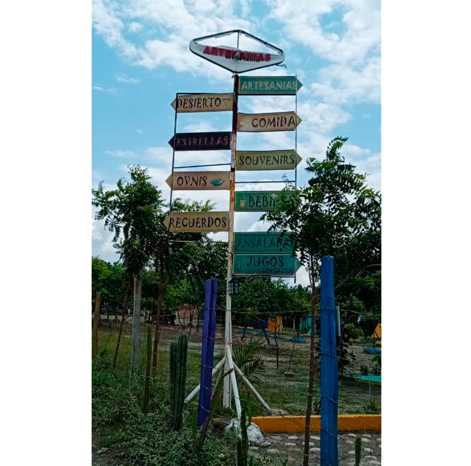
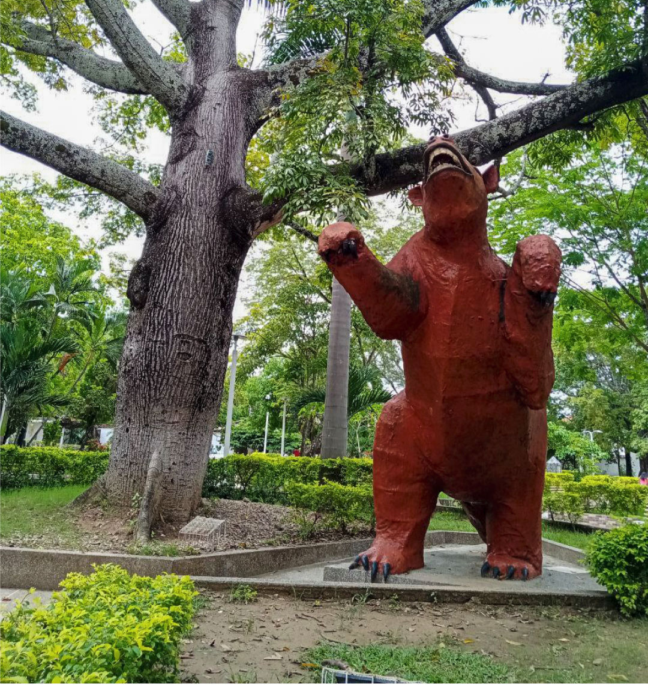
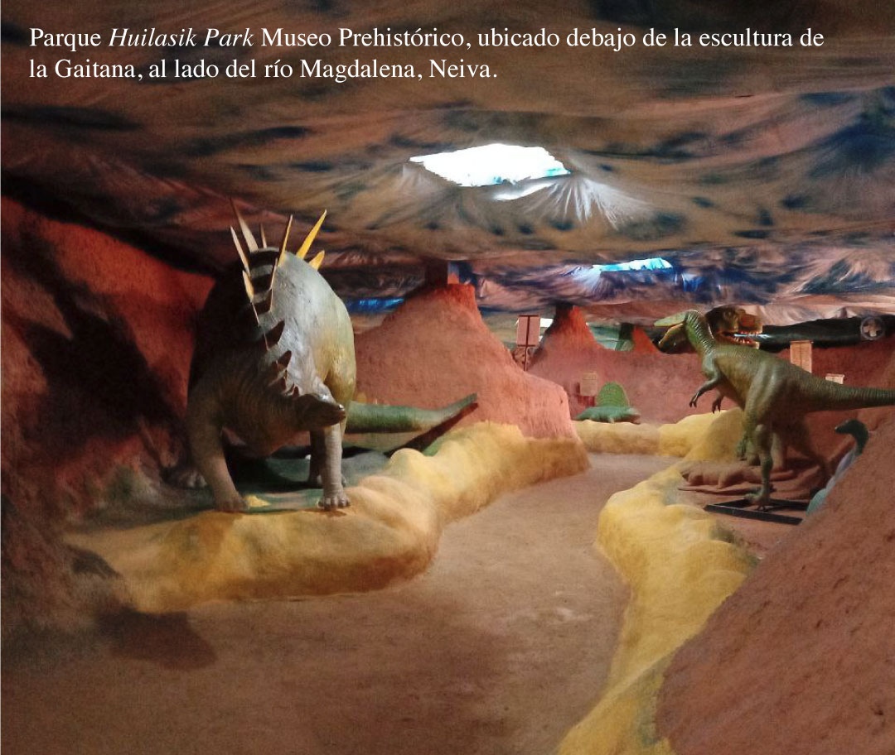
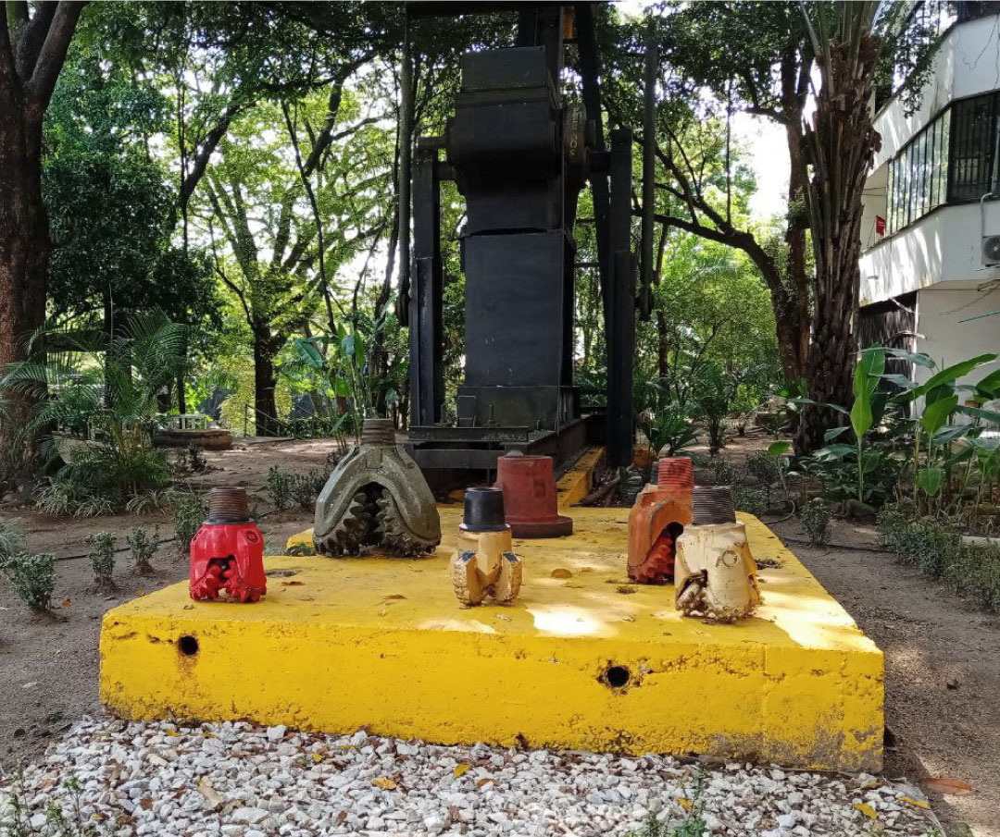
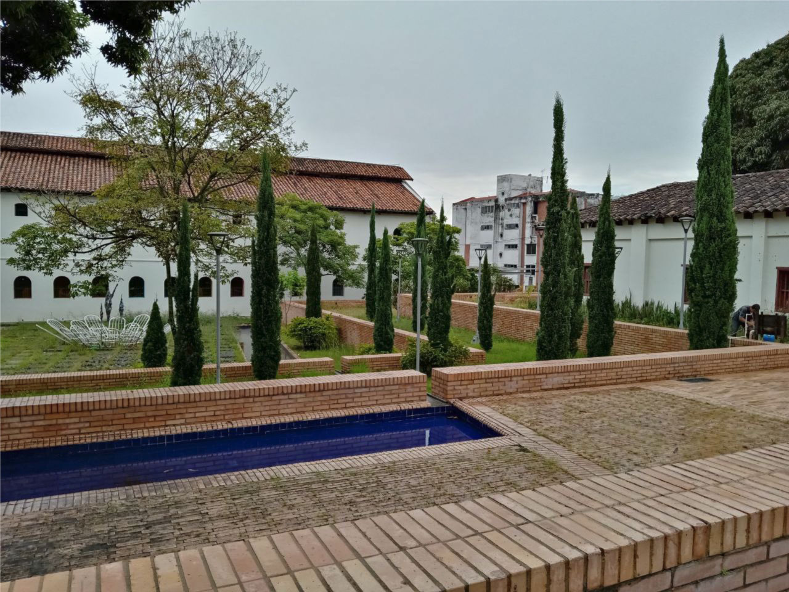
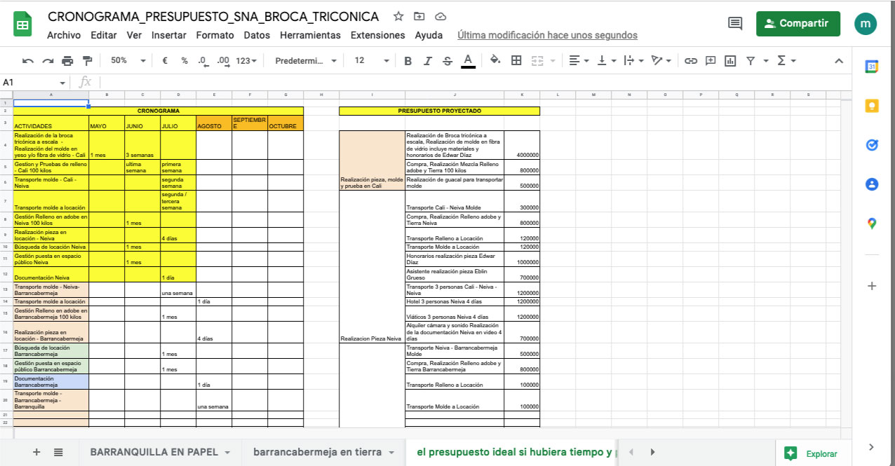
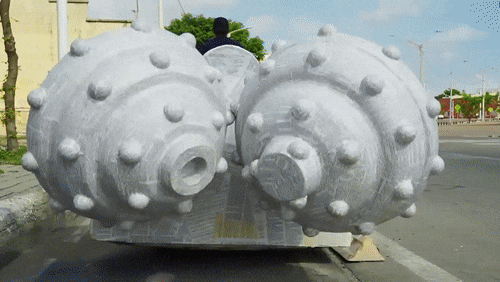
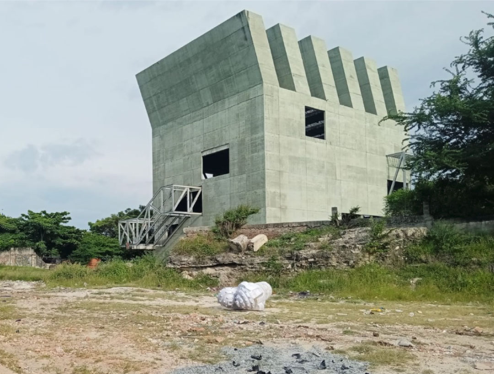
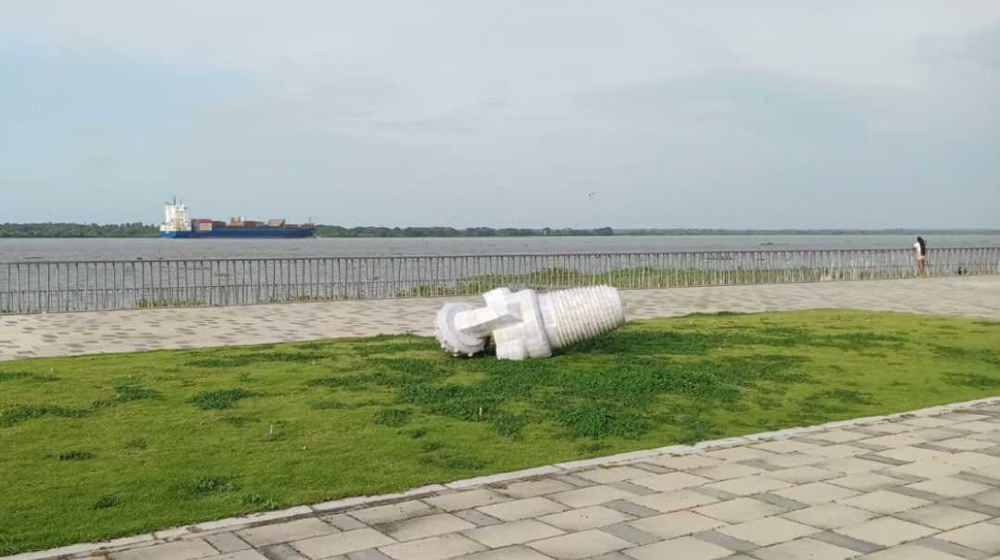
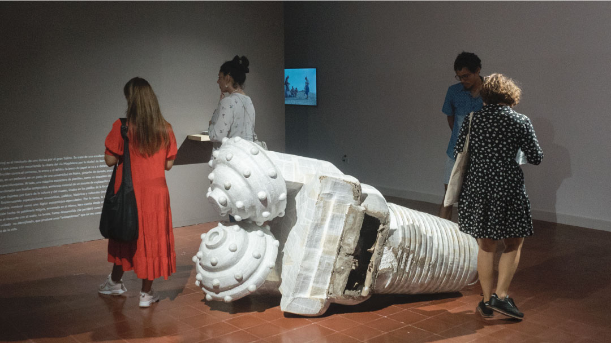

Incidentes de un viaje al borde del río (dinosaurios blancos)*
Obra comisionada para el 46 SNA
Producción y logística
Diego Insignares, Yanina martínez, Sneider Rico Maury, Fernando García Iance, Fernando García Donado, Jaison José Rico, Luis Campos
2022
Enlaces y descargas
Hoja de sala de Incidentes al borde del río (dinosaurios blancos)
Un recorrido por un desierto, un ovni-puerto, un museo paleontológico, un parque jurásico, esculturas públicas, una cárcel hecha museo y facultades de arte e ingeniería de petróleos en un viaje al borde del río Magdalena por los departamentos
del Tolima y Huila. Los hallazgos, recopilados en un texto, llevaron a la construcción de un objeto que pone en cuestión procesos extractivistas que se posan sobre el río Magdalena la producción artística y la vida misma.
Incidentes de un viaje al borde del río (dinosaurios blancos)
o
Incidentes de un viaje al borde (dinosaurios blancos)
o
Incidentes de un viaje (dinosaurios blancos)
o
…
por Mónica Restrepo
Durante el viaje de investigación por la cuenca alta del río Magdalena, visité Neiva, Villavieja, el desierto de la Tatacoa y Palermo, ubicados en el departamento del Huila. Luego visité Ibagué y las ruinas de Armero en el
Tolima. Se me aparecieron durante el viaje, relaciones con las edades de la tierra, el extractivismo y la especulación en relación al tiempo y al espacio de esos territorios que recorrí por tierra en carros y buses. Cerca al desierto de la
Tatacoa, me pareció muy curioso, este letrero, que anunciaba distintas experiencias: desde conocer las cuevas y formaciones rocosas del desierto, ver las estrellas en las noches, visitar las huellas que dejan naves alienígenas, comprar objetos
prehispánicos y mermeladas de cactus. De donde estaba ese letrero a unos pocos kilómetros, se podía visitar además, el museo paleontológico de Villavieja, especializado en fósiles del Mioceno, ubicado en una casa colonial de tres piezas, al
frente de un parque donde había una escultura pública en metal de un Magdalenabradys confusum. Un oso perezoso gigante que habitó esas
tierras en el Mioceno tardío.
Este cruce o más bien, colapso de tiempos, me pareció muy particular en cuanto a las posibilidades de especulación y ficción que los propios habitantes del territorio proponen desde los indicios materiales y fósiles que están desperdigados
por la zona. La riqueza de la tierra, matérica e histórica pareciera permitir la aparición de lugares tan interesantes como el Huilasik Park, el
Festival de Arcilla de Palermo, el Ovni-puerto de la Tatacoa, así como la fuerte presencia de las culturas prehispánicas sublimadas en los mitos y leyendas que se hacen presentes en forma de escultura pública en los espacios culturales y
turísticos de la ciudad y los pueblos de los alrededores. La escultura pública precisamente, es una forma de arte que encontré muy relevante en el viaje.
Los ríos turbios, que corren a través de la ciudad de Neiva, y de donde se sacan grandes cantidades de tierra para construcción, son una fuente opaca de materialidades que inspiran gran cantidad de construcciones culturales y también
fenómenos económicos y políticos en relación al extractivismo impulsado por el estado centralista y el capital extranjero. Las extracciones de petróleo y las hidroeléctricas son fenómenos que provocan resistencias y a la vez muchos cambios en
el territorio. Al analizarlas y entretejer especulaciones con estos fenómenos culturales, se me aparecieron relaciones muy interesantes. El detonante fue el encontrar dentro de la Universidad Surcolombiana, donde enseñan la carrera de
Ingeniería de Petróleos, unas brocas tricónicas pintadas de dorado, anaranjado, amarillo, rojo dispuestas sobre su tornillo de conexión, al lado de una máquina extractora de
petroleo. Estaban exhibidas como si se tratara de una escultura pública, en espacios comunes de la universidad sobre un pedestal amarillo. Estos objetos, especialmente las brocas por sus formas circulares y enigmáticas casi precolombinas, las
conecté con los fósiles del museo de Villavieja, las piezas precolombinas del Museo Arqueológico del Huila, los dinosaurios en barro y cemento de Huilasik Park, el Ovni-puerto y los diversos proyectos de escultura pública de la ciudad.
Estas brocas, exhibidas en la intemperie, son también huellas temporales, evidencia material e histórica, aunque esta vez, de un sistema de explotación extractivista que aprovecha la riqueza material de la tierra en términos muy distintos a
los mencionados antes. Pero son a su vez, objetos con una carga fuerte que de alguna manera, ignoramos, dejamos por fuera de la cultura, del museo, y se queda en los pasillos de la facultad de ingeniería, pero cuya forma se conecta y se
colapsa diría yo con otras materias, formas y tiempos. Entrecruzando especulaciones económicas, históricas y culturales, encuentro -incluídos hasta los grandes proyectos culturales como hacer el Salón Nacional de Artistas en todo el río
Magdalena o el megaproyecto del Museo del Panóptico en Ibagué como museo histórico y contemporáneo del Tolima Grande, así como otros grandes proyectos regionales- algo que podría nombrar como una lógica extractivista-especulativa que
podría escribirse en clave de un posible guión de telenovela de ciencia ficción: Con las actuaciones de unos funcionarios que proyectan especulando presupuestos desde oficinas, powerpoints y lobbys para intervenir tal o cuál territorio, ya
sea sacar petróleo, mármol, cultura. Todos indicadores de progreso. Artistas que hacen visitas guiadas sobre museos ficticios en edificios vacíos, usando los tiempos verbales del condicional, el futuro y el futuro perifrástico. Batallas
campales entre cuerpos y proyecciones de papel, luces de videobeam, archivos de excel, cuyo público son los dinosaurios de cemento y el oso magdalenabradys confusum que se ríen desconfiados. Una montaña que se viene encima. Toda una
puesta en escena del extractivismo en sus formas culturales, tan extrañas pero tan familiares para nosotros.
Mirando todos estos signos desde el reflejo de la ventana del vehículo en movimiento o la pantalla, me pregunto ¿Pues qué son los dinosaurios y animales prehistóricos del Mioceno, sino puro petróleo? ¿Que les ponemos a hacer a los
extraterrestres sino venir a buscar recursos naturales? ¿Y los gerentes de las industrias petroleras que son, sino unos depredadores blancos vestidos de corbata? ¿Y los proyectos de desarrollo económico o cultural de los gobiernos corruptos
sino bosques de papel y números? ¿Y qué somos los artistas sino extractivistas precarios de nosotros mismos y nuestros afectos?
Producto de esta deriva por el gran Tolima, surge una propuesta que ha tenido que pasar por muchos estados. La burocracia y las crisis dentro del Ministerio de Cultura, la ha dejado en suspenso durante varios meses. Por tanto, ha
debido ser modificada, transformada, moldeada para ajustarse entre la precariedad, la incertidumbre y la realidad de los tiempos de este mega-proyecto cultural. Aparece entonces una broca tricónica hecha en papel, de gran tamaño, a raíz de
estas especulaciones artísticas, culturales, laborales y administrativas. En papel, como harían los funcionarios cuando escriben leyes y proyectos, proyecciones de papel, alejados de la realidad. Ciencia-ficción hecha de palabrería mágica,
encerrada en sí misma, letra escrita desde una desconexión total con el territorio al que afecta. El poderoso papel, soporte de la letra que con sangre entra porque ella es la que penetra y coloniza desde ese reino plano, predilecto y
blanco aunque frágil también. Una broca tricónica, forma desconocida ¿Parecerá fósil prehistórico? Como los dinosaurios y el oso, una escultura grande y pública, aunque de papel y hecha con dinero del estado, con sus libros de leyes, códigos
mineros e hidrocarburos, códigos de comercio y normativas sobre explotación de los recursos naturales. Una construcción de papel que se va a ir dañando, alterando, embarrando, desbaratando al ser arrastrada por el suelo en una ciudad. ¿Qué
ciudad? ¿Dónde desembocar con todo este trabajo que partió de un recorrido con el cuerpo y ahora está estacionado en un escritorio? Podría ser una posibilidad coherente, desembocar en Barranquilla donde termina el río Magdalena, donde esta
construcción de papel, un objeto no volador no identificado, un ONVNI, finalmente se materialice. En compañía de una operaria, podrá ser arrastrada e instalada en diversos paisajes industriales y naturales de la ciudad; en
distintos tiempos del día, la tarde y la noche. Con la fricción del papel contra el cemento, la arena, el asfalto, la realidad, la broca construida con papel irá cambiando. Produciendo una serie de “avistamientos”que tal vez construyan una
imagen sobre el extractivismo que nos pasa, en diversos ámbitos de la vida.

Incidentes de un viaje al borde del río (Dinosaurios blancos)* expuesta en la Universidad del Atlántico, Barranquilla, parte de la exposición Caminar Contracorriente.